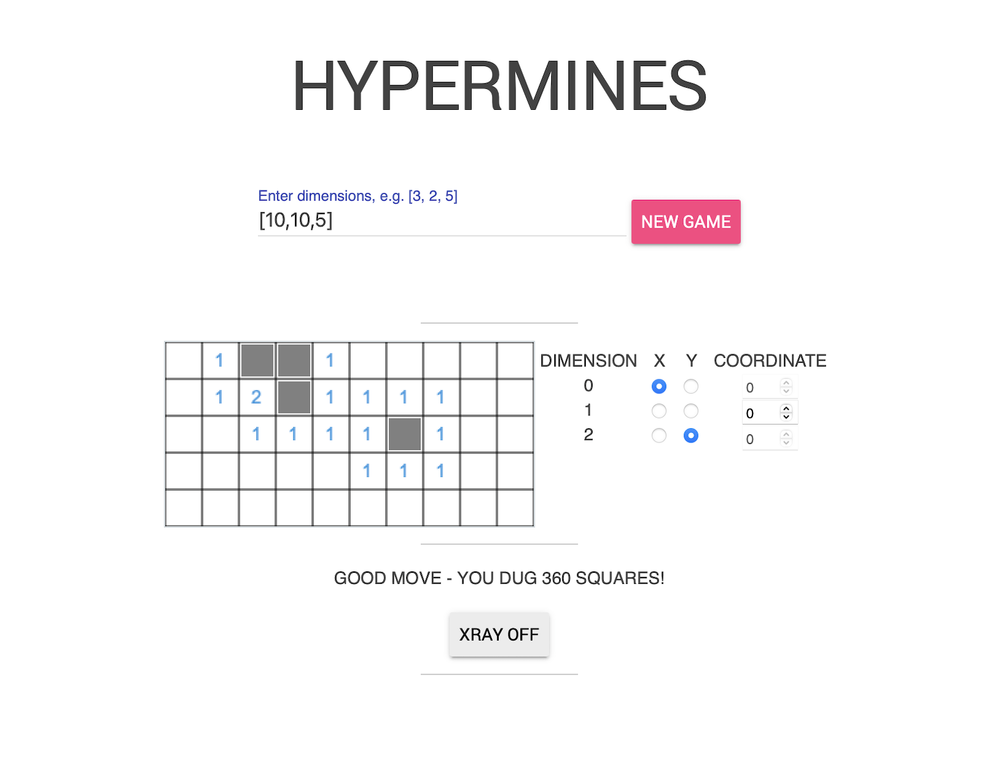
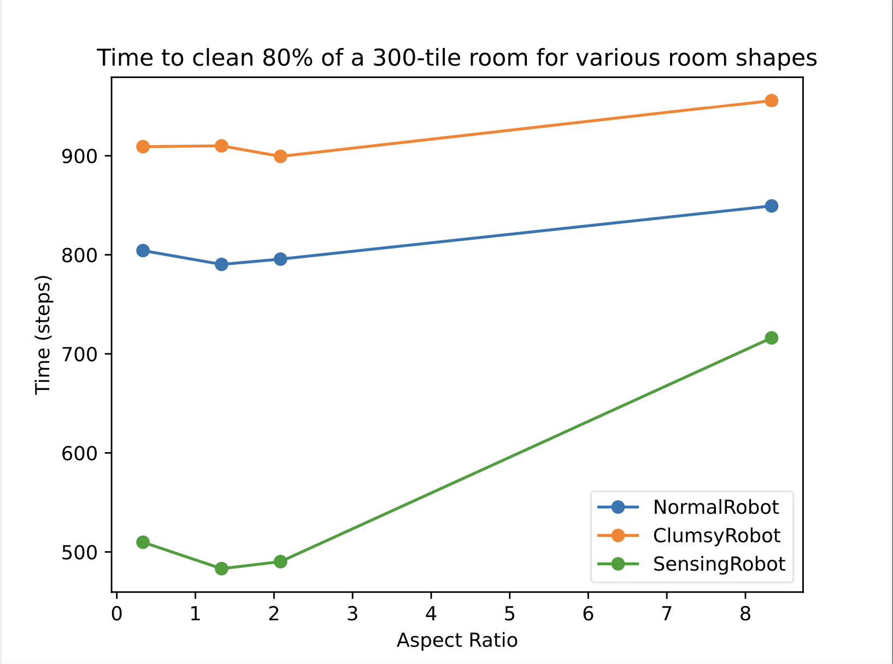

Project Gallery
Hypermines
N-dimensional minesweeper made for 6.1010, MIT's Fundamentals of Programming course. To play the game, feel free to download source code linked below!
To run the app from your computer, unzip the files, and copy the location to the server_nd.py file. Then, open up the terminal, and type "cd" and paste the location of server_nd.py. Then, type "python3 server_nd.py", and type the URL that pops up on your terminal into your web browser to play!
Robot Simulation
Robot path-finding simulation program made for 6.100B, MIT's Intro to Computational Thinking and Data Science course. Feel free to view the source code linked below!
